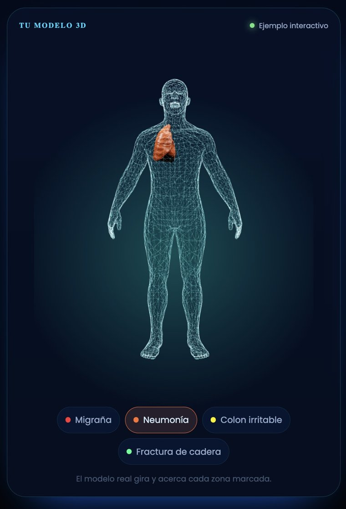
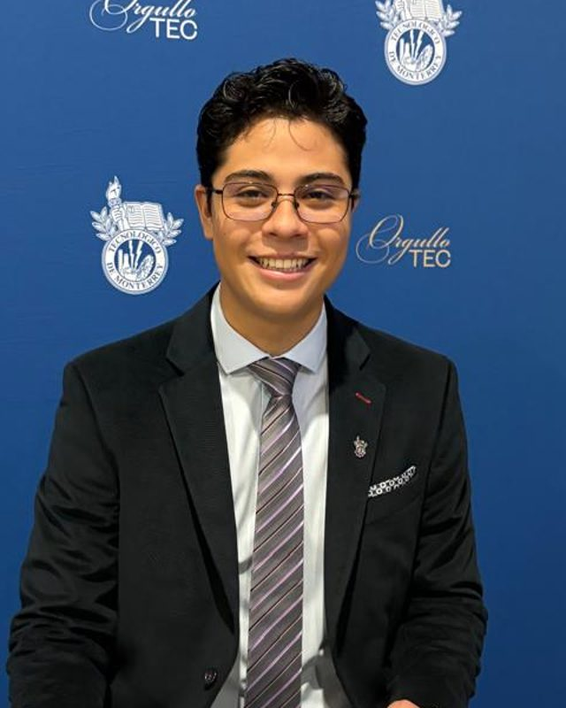
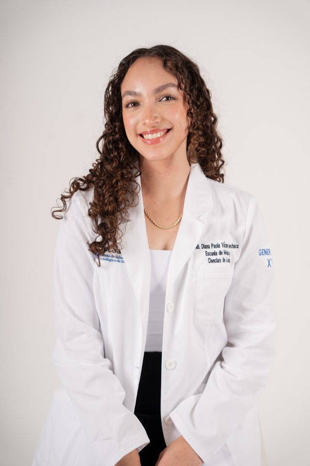

<title>Unison Health</title>
<meta name="claude:viewport-fit-sides" content="cover">
<link rel="preconnect" href="https://fonts.googleapis.com">
<link rel="preconnect" href="https://fonts.gstatic.com" crossorigin>
<link rel="stylesheet" href="https://fonts.googleapis.com/css2?family=Outfit:wght@300;400;600;700&family=DM+Sans:opsz,wght@9..40,400;9..40,500;9..40,700&display=swap">
<style>
/* Layout: one long scroll; the page's ground changes color section by section, and three lines move in unison behind the opening. */
:root{
  --cobalto:#1E40AF; --azul:#5B8DEF; --coral:#FF7A59; --niebla:#F4F6FA; --tinta:#0F172A; --blanco:#FFFFFF;
  --display:'Outfit', 'Avenir Next', 'Segoe UI', system-ui, sans-serif;
  --body:'DM Sans', 'Helvetica Neue', Arial, system-ui, sans-serif;
  --bg:var(--blanco); --fg:var(--tinta); --muted:#475569; --line:#DDE3EE; --card:var(--niebla); --pill:#E8EEFB; --pill-fg:var(--cobalto);
  --ease:cubic-bezier(.22,.8,.24,1);
  color-scheme:light;
}
[data-scene="blanco"]{--bg:#FFFFFF;--fg:#0F172A;--muted:#475569;--line:#DDE3EE;--card:#F4F6FA;--pill:#E8EEFB;--pill-fg:#1E40AF}
[data-scene="niebla"]{--bg:#F4F6FA;--fg:#0F172A;--muted:#475569;--line:#D5DCE8;--card:#FFFFFF;--pill:#E2E9F8;--pill-fg:#1E40AF}
[data-scene="cobalto"]{--bg:#1E40AF;--fg:#FFFFFF;--muted:#CFDBFF;--line:rgba(255,255,255,.22);--card:rgba(255,255,255,.08);--pill:rgba(255,255,255,.14);--pill-fg:#FFFFFF}
[data-scene="tinta"]{--bg:#0F172A;--fg:#FFFFFF;--muted:#A9B4C8;--line:rgba(255,255,255,.14);--card:rgba(255,255,255,.05);--pill:rgba(91,141,239,.18);--pill-fg:#A9C4FF}

*{box-sizing:border-box}
html{scroll-behavior:smooth}
body{
  margin:0; background:var(--bg); color:var(--fg);
  font:400 17px/1.6 var(--body);
  transition:background-color .8s var(--ease), color .8s var(--ease);
  -webkit-font-smoothing:antialiased;
}
body::before{content:"";position:fixed;inset:0 0 auto;height:env(safe-area-inset-top,0px);z-index:60;background:var(--bg);transition:background-color .8s var(--ease)}
a{color:inherit}
:focus-visible{outline:3px solid var(--coral);outline-offset:3px;border-radius:6px}
h1,h2,h3{font-family:var(--display);font-weight:600;line-height:1.08;margin:0;text-wrap:balance;letter-spacing:-.01em}
p{margin:0}
.wrap{max-width:1180px;margin:0 auto;padding-left:max(20px, env(safe-area-inset-left,0px));padding-right:max(20px, env(safe-area-inset-right,0px))}
.eyebrow{font:500 13px/1.2 var(--body);letter-spacing:.14em;text-transform:uppercase;color:var(--muted)}
.lead{font-size:clamp(18px,2vw,21px);color:var(--muted);max-width:60ch}

/* Sections paint themselves when scripts are off; with scripts, the body carries the color and fades between scenes */
section[data-scene]{background:var(--bg);color:var(--fg)}
html.js main section[data-scene]{background:transparent;--bg:inherit;--fg:inherit;--muted:inherit;--line:inherit;--card:inherit;--pill:inherit;--pill-fg:inherit;color:inherit}
.band{padding-block:clamp(72px,11vw,140px)}

/* Header */
.top{position:sticky;top:env(safe-area-inset-top,0px);z-index:50;background:var(--bg);transition:background-color .8s var(--ease)}
.top .wrap{display:flex;align-items:center;justify-content:space-between;gap:16px;padding-block:14px}
.brand{display:flex;align-items:center;gap:10px;text-decoration:none}
.brand svg{width:34px;height:34px;flex:none}
.brand span{font:600 23px/1 var(--display);letter-spacing:-.01em}
.brand span i{font-style:normal;font-weight:300}
.nav{display:flex;align-items:center;gap:28px}
.nav a{text-decoration:none;font-weight:500;font-size:15px;opacity:.85}
.nav a:hover{opacity:1}
.btn{display:inline-flex;align-items:center;justify-content:center;gap:10px;min-height:48px;padding:0 22px;border-radius:999px;font:600 16px/1 var(--body);text-decoration:none;border:0;cursor:pointer;transition:transform .3s var(--ease), background-color .3s, color .3s}
.btn:hover{transform:translateY(-2px)}
.btn-primary{background:var(--cobalto);color:#fff}
[data-scene="cobalto"] .btn-primary, body[data-scene="cobalto"] .btn-primary{background:#fff;color:var(--cobalto)}
.btn-ghost{background:transparent;color:inherit;box-shadow:inset 0 0 0 1.5px var(--line)}
.btn-sm{min-height:42px;padding:0 18px;font-size:15px}
.btn-wide{display:flex;width:90%}
.btn-site{background:var(--cobalto);color:#fff}
.btn-site:hover{background:#18358F}
.btn-light{background:#fff;color:var(--cobalto)}
.btn-light:hover{background:#E8EEFB}
.menu-btn{display:none;background:transparent;border:0;color:inherit;width:44px;height:44px;border-radius:12px;cursor:pointer}
.menu-panel{border-top:1px solid var(--line)}
.menu-panel .wrap{display:flex;flex-direction:column;gap:4px;padding-block:12px 20px}
.menu-panel a{display:block;padding:12px 0;text-decoration:none;font:500 20px/1.2 var(--display)}

/* Hero */
.hero{padding-top:clamp(48px,8vw,104px);padding-bottom:clamp(220px,30vw,360px);overflow:hidden}
.hero .wrap{display:grid;gap:28px}
.hero h1{font-size:clamp(42px,7.4vw,96px);max-width:14ch}
.hero h1 .accent{color:var(--cobalto)}
.hero h1 .dot{display:inline-block;width:.2em;height:.2em;border-radius:50%;background:var(--coral);margin-left:.04em;vertical-align:.08em}
.hero .lead{max-width:52ch}
.hero-actions{display:flex;flex-wrap:wrap;gap:12px}
.hero-meta{display:flex;flex-wrap:wrap;gap:8px 18px;font-size:14px;color:var(--muted)}
.hero-meta span{display:inline-flex;align-items:center;gap:8px}
.hero-meta span::before{content:"";width:6px;height:6px;border-radius:50%;background:var(--azul)}
.stagger>*{animation:rise 1s var(--ease) both}
.stagger>*:nth-child(2){animation-delay:.12s}.stagger>*:nth-child(3){animation-delay:.24s}.stagger>*:nth-child(4){animation-delay:.36s}.stagger>*:nth-child(5){animation-delay:.48s}
@keyframes rise{from{transform:translateY(22px);opacity:.25}to{transform:none;opacity:1}}
.unison{display:block;width:100%;height:clamp(180px,26vw,320px);margin-top:clamp(24px,5vw,56px)}

/* Problem */
.quotes{display:grid;grid-template-columns:repeat(3,minmax(0,1fr));gap:20px;margin-top:48px}
.quote{padding:28px;border-radius:20px;background:var(--card);display:flex;flex-direction:column;gap:18px}
.quote p{font:400 21px/1.35 var(--display)}
.quote small{font-size:14px;color:var(--muted)}
.answer{margin-top:48px;display:flex;align-items:center;gap:14px;font:600 clamp(22px,3vw,30px)/1.2 var(--display)}
.answer::before{content:"";flex:none;width:14px;height:14px;border-radius:50%;background:var(--coral)}

/* How we work */
.split{display:grid;grid-template-columns:minmax(0,5fr) minmax(0,7fr);gap:clamp(32px,6vw,80px);align-items:start}
.split h2{font-size:clamp(34px,5vw,60px)}
.split .lead{margin-top:20px}
.pillars{display:grid;gap:16px}
.featured{background:#fff;color:var(--tinta);border-radius:24px;padding:clamp(28px,4vw,44px);display:grid;gap:16px}
.featured .tag{display:inline-flex;width:max-content;padding:6px 12px;border-radius:999px;background:#E8EEFB;color:var(--cobalto);font:500 13px/1 var(--body)}
.featured h3{font-size:clamp(26px,3vw,36px)}
.featured p{color:#475569}
.pillar{display:grid;grid-template-columns:auto minmax(0,1fr);gap:18px;padding:26px 4px;border-top:1px solid var(--line)}
.pillar svg{width:40px;height:40px}
.pillar h3{font-size:24px;margin-bottom:6px}
.pillar p{color:var(--muted)}

/* Record */
.record{display:grid;grid-template-columns:minmax(0,1fr) minmax(0,1fr);gap:clamp(32px,6vw,80px);align-items:center}
.record h2{font-size:clamp(34px,5vw,60px)}
.record .lead{margin-top:20px}
.checks{list-style:none;padding:0;margin:28px 0 0;display:grid;gap:14px}
.checks li{display:grid;grid-template-columns:22px minmax(0,1fr);gap:12px;align-items:start}
.checks li::before{content:"";width:10px;height:10px;margin-top:9px;border-radius:50%;background:var(--coral)}
.device{position:relative;border-radius:28px;padding:14px;background:linear-gradient(160deg,#1C2A4A,#111A2E);box-shadow:0 30px 80px rgba(0,0,0,.35)}
.screen{border-radius:18px;background:#0B1222;padding:22px;display:grid;grid-template-columns:minmax(0,1fr) minmax(0,1.2fr);gap:20px;min-height:360px}
.body-fig{position:relative}
.body-fig svg{width:100%;height:100%;max-height:340px}
.marker{animation:pulse 2.6s ease-in-out infinite}
.marker:nth-of-type(2){animation-delay:.4s}.marker:nth-of-type(3){animation-delay:.8s}
@keyframes pulse{0%,100%{opacity:1}50%{opacity:.45}}
.panel{display:flex;flex-direction:column;gap:12px}
.panel .ex{font-size:12px;letter-spacing:.12em;text-transform:uppercase;color:#7F93B8}
.row{background:rgba(255,255,255,.05);border-radius:12px;padding:12px 14px;display:grid;gap:8px}
.row b{font:500 14px/1.2 var(--body);color:#fff}
.row .bar{height:6px;border-radius:6px;background:rgba(255,255,255,.08);overflow:hidden}
.row .bar i{display:block;height:100%;border-radius:6px;background:var(--azul)}
.row .bar i.c{background:var(--coral)}
.row span{font-size:12px;color:#93A3C3}
.caption{margin-top:14px;font-size:13px;color:var(--muted)}
.shot{margin:0;max-width:440px;box-shadow:0 30px 80px rgba(0,0,0,.4);border-radius:28px;overflow:hidden}
.shot img{display:block;width:100%;height:auto}

/* Steps */
.steps-head{display:flex;flex-wrap:wrap;justify-content:space-between;align-items:end;gap:20px}
.steps-head h2{font-size:clamp(34px,5vw,60px);max-width:16ch}
.steps{list-style:none;padding:0;margin:56px 0 0;display:grid;grid-template-columns:repeat(6,minmax(0,1fr));gap:18px;counter-reset:s;position:relative}
.steps::before{content:"";position:absolute;left:0;right:0;top:21px;height:2px;background:var(--line)}
.steps li{position:relative;display:grid;gap:12px;align-content:start}
.steps li::before{counter-increment:s;content:counter(s);display:grid;place-items:center;width:44px;height:44px;border-radius:50%;background:var(--cobalto);color:#fff;font:600 17px/1 var(--display);position:relative}
.steps li:last-child::before{background:var(--coral);color:var(--tinta)}
.steps h3{font-size:21px}
.steps p{color:var(--muted);font-size:16px}

/* Team */
.team{display:grid;grid-template-columns:repeat(2,minmax(0,1fr));gap:24px;margin-top:48px}
.person{display:grid;grid-template-columns:150px minmax(0,1fr);gap:24px;padding:24px;border-radius:24px;background:var(--card)}
.photo{aspect-ratio:4/5;max-width:100%;border-radius:16px;background:linear-gradient(160deg,#5B8DEF,#1E40AF);display:grid;place-items:center;color:#fff;font:600 40px/1 var(--display);position:relative;overflow:hidden}
.photo small{position:absolute;bottom:10px;left:0;right:0;text-align:center;font:500 11px/1.2 var(--body);opacity:.8}
.photo img{position:absolute;inset:0;width:100%;height:100%;object-fit:cover;object-position:50% 18%}
.person h3{font-size:26px}
.person .role{color:var(--cobalto);font-weight:500;margin:6px 0 12px}
.person p{color:var(--muted);font-size:16px}
.cred{margin-top:14px;padding-top:14px;border-top:1px solid var(--line);font-size:14px;color:var(--muted)}

/* Values */
.values{display:grid;grid-template-columns:repeat(5,minmax(0,1fr));gap:18px;margin-top:48px}
.value{padding-top:20px;border-top:2px solid var(--fg)}
.value h3{font-size:21px;margin-bottom:8px}
.value p{color:var(--muted);font-size:15px}

/* Services */
.services{display:grid;grid-template-columns:repeat(3,minmax(0,1fr));gap:20px;margin-top:48px}
.service{background:var(--card);border-radius:24px;padding:30px;display:flex;flex-direction:column;gap:14px}
.service.main{background:var(--cobalto);color:#fff}
.service.main p,.service.main li{color:#DCE6FF}
.service h3{font-size:26px}
.service p{color:var(--muted)}
.service ul{margin:0;padding-left:18px;color:var(--muted);display:grid;gap:6px;font-size:15px}
.price{margin-top:auto;padding-top:12px;font:600 22px/1 var(--display)}
.price small{display:block;font:400 13px/1.4 var(--body);opacity:.75;margin-top:6px}

/* CTA */
.cta{text-align:left}
.cta h2{font-size:clamp(40px,7vw,88px);max-width:13ch}
.cta .lead{margin-top:20px}
.cta-row{display:flex;flex-wrap:wrap;align-items:center;gap:16px 28px;margin-top:36px}
.phone{font:500 18px/1.4 var(--body);user-select:all}

/* Footer */
footer .wrap{display:grid;gap:36px;padding-block:64px 40px}
.foot-top{display:flex;flex-wrap:wrap;justify-content:space-between;gap:32px}
.foot-links{display:grid;grid-template-columns:repeat(2,minmax(0,auto));gap:10px 48px}
.foot-links a{text-decoration:none;color:var(--muted)}
.foot-links a:hover{color:var(--fg)}
.legal{border-top:1px solid var(--line);padding-top:24px;display:grid;gap:8px;font-size:13px;color:var(--muted)}

/* Silk ribbons behind every section */
#silk{position:fixed;inset:0;width:100%;height:100%;z-index:0;pointer-events:none;display:block}
main,footer{position:relative;z-index:1}
.quote{backdrop-filter:blur(6px);-webkit-backdrop-filter:blur(6px)}

/* Scroll reveal: elements stay visible; they only drift into place */
.rv{transition:transform 1s var(--ease)}
html.js .rv.pre{transform:translateY(28px)}

@media (max-width:960px){
  .split,.record{grid-template-columns:minmax(0,1fr)}
  .quotes{grid-template-columns:minmax(0,1fr)}
  .steps{grid-template-columns:minmax(0,1fr);gap:26px}
  .steps::before{left:21px;right:auto;top:0;bottom:0;width:2px;height:auto}
  .steps li{grid-template-columns:44px minmax(0,1fr);column-gap:16px}
  .steps li>*{grid-column:2}
  .steps li::before{grid-row:1 / span 2}
  .team{grid-template-columns:minmax(0,1fr)}
  .values{grid-template-columns:repeat(2,minmax(0,1fr))}
  .services{grid-template-columns:minmax(0,1fr)}
  .nav{display:none}
  .menu-btn{display:grid;place-items:center}
}
@media (max-width:560px){
  body{font-size:16px}
  .person{grid-template-columns:minmax(0,1fr)}
  .photo{max-width:180px}
  .values{grid-template-columns:minmax(0,1fr)}
  .screen{grid-template-columns:minmax(0,1fr)}
  .body-fig svg{max-height:220px}
  .top .btn-sm{display:none}
}
@media (prefers-reduced-motion:reduce){
  *{animation:none!important;transition:none!important;scroll-behavior:auto!important}
  html.js .rv.pre{transform:none}
}
</style>

<canvas id="silk" aria-hidden="true"></canvas>
<header class="top">
  <div class="wrap">
    <a class="brand" href="#inicio" aria-label="Unison Health, inicio">
      <svg viewBox="4 4 92 88" aria-hidden="true">
        <path d="M18 12 V52 A32 32 0 0 0 50 84" fill="none" stroke="currentColor" stroke-width="10" stroke-linecap="round"/>
        <path d="M82 12 V52 A32 32 0 0 1 50 84" fill="none" stroke="#5B8DEF" stroke-width="10" stroke-linecap="round"/>
        <circle cx="50" cy="40" r="11" fill="#FF7A59"/>
      </svg>
      <span>unison<i> health</i></span>
    </a>
    <nav class="nav" aria-label="Principal">
      <a href="#como">Cómo trabajamos</a>
      <a href="#expediente">Expediente</a>
      <a href="#consulta">Tu consulta</a>
      <a href="#nosotros">Nosotros</a>
      <a href="#servicios">Servicios</a>
    </nav>
    <div style="display:flex;align-items:center;gap:8px">
      <a class="btn btn-primary btn-sm" href="https://www.cronosmd.com/patientLanding" target="_blank" rel="noopener">Agendar</a>
      <button class="menu-btn" id="menuBtn" aria-expanded="false" aria-controls="menuPanel" aria-label="Abrir menú">
        <svg width="24" height="24" viewBox="0 0 24 24" fill="none" stroke="currentColor" stroke-width="2" stroke-linecap="round" aria-hidden="true"><path d="M4 8h16M4 16h16"/></svg>
      </button>
    </div>
  </div>
  <div class="menu-panel" id="menuPanel" hidden>
    <div class="wrap">
      <a href="#como">Cómo trabajamos</a>
      <a href="#expediente">Expediente</a>
      <a href="#consulta">Tu consulta</a>
      <a href="#nosotros">Nosotros</a>
      <a href="#servicios">Servicios</a>
      <a href="#agenda">Agendar consulta</a>
    </div>
  </div>
</header>

<main>
  <section class="hero" id="inicio" data-scene="blanco">
    <div class="wrap stagger">
      <p class="eyebrow">Medicina + nutrición · Consultas en línea</p>
      <h1>Tu médico, tu nutrióloga y tú: <span class="accent">al unísono</span><span class="dot" aria-hidden="true"></span></h1>
      <p class="lead">Te ayudamos a entender y controlar tu salud a través de hábitos que sí puedas sostener, un solo plan y tu expediente siempre a la vista.</p>
      <div class="hero-actions">
        <a class="btn btn-primary" href="https://www.cronosmd.com/patientLanding" target="_blank" rel="noopener">Agenda tu consulta</a>
        <a class="btn btn-ghost" href="#como">Cómo trabajamos</a>
      </div>
      <div class="hero-meta"><span>Consulta médica y de nutrición coordinadas</span><span>Expediente digital con modelo 3D</span><span>100% en línea</span></div>
    </div>
  </section>

  <section class="band" data-scene="blanco" aria-labelledby="t-problema">
    <div class="wrap">
      <p class="eyebrow rv">Lo que escuchamos en consulta</p>
      <div class="quotes" style="margin-top:24px">
        <figure class="quote rv" style="margin:0"><p>"Me dijeron que bajara de peso en cinco minutos de consulta, y ya."</p><small>Salir sin entender qué te pasa</small></figure>
        <figure class="quote rv" style="margin:0"><p>"El médico me dijo una cosa y el nutriólogo otra."</p><small>Indicaciones que no coinciden</small></figure>
        <figure class="quote rv" style="margin:0"><p>"Me recomendaron quitar la coca y las harinas de por vida."</p><small>Indicaciones imposibles de sostener</small></figure>
      </div>
      <h2 id="t-problema" class="rv" style="font-size:clamp(28px,3.8vw,46px);margin-top:56px;max-width:26ch">Todos te dicen lo que deberías hacer, pero no cómo hacerlo ni cómo implementarlo en tu vida diaria.</h2>
      <p class="answer rv" style="margin-top:28px">Estás a tiempo, y no tienes que hacerlo solo.</p>
    </div>
  </section>

  <section class="band" id="como" data-scene="cobalto" aria-labelledby="t-como">
    <div class="wrap split">
      <div class="rv">
        <p class="eyebrow">Cómo trabajamos</p>
        <h2 id="t-como" style="margin-top:16px">Un solo equipo, un solo plan, contigo dentro.</h2>
        <p class="lead">Medicina y nutrición trabajando juntas, con educación para que entiendas cada decisión sobre tu salud.</p>
      </div>
      <div class="pillars">
        <article class="featured rv">
          <span class="tag">Lo que nos hace distintos</span>
          <h3>Un equipo que sí se habla</h3>
          <p>Tu médico y tu nutrióloga revisan tu caso juntos y arman contigo un solo plan. Nada de indicaciones que se contradicen.</p>
        </article>
        <article class="pillar rv">
          <svg viewBox="0 0 100 100" aria-hidden="true"><rect x="24" y="8" width="52" height="84" rx="9" fill="none" stroke="currentColor" stroke-width="6"/><circle cx="50" cy="32" r="8" fill="none" stroke="currentColor" stroke-width="6"/><path d="M36 66 C36 48, 64 48, 64 66" fill="none" stroke="currentColor" stroke-width="6" stroke-linecap="round"/><circle cx="58" cy="56" r="6" fill="#FF7A59"/></svg>
          <div><h3>Tu salud, a la vista</h3><p>Tus estudios, diagnósticos, recomendaciones y avances en un expediente digital que puedes consultar cuando quieras.</p></div>
        </article>
        <article class="pillar rv">
          <svg viewBox="0 0 100 100" aria-hidden="true"><path d="M50 26 C40 18, 22 18, 12 22 V78 C22 74, 40 74, 50 82 C60 74, 78 74, 88 78 V22 C78 18, 60 18, 50 26 Z" fill="none" stroke="currentColor" stroke-width="6" stroke-linejoin="round"/><path d="M50 26 V82" stroke="currentColor" stroke-width="6"/><path d="M64 21 H76 V44 L70 38 L64 44 Z" fill="#FF7A59"/></svg>
          <div><h3>Hábitos para toda la vida</h3><p>Cambios pequeños que caben en tu rutina, en lugar de planes que se abandonan al mes.</p></div>
        </article>
      </div>
    </div>
  </section>

  <section class="band" id="expediente" data-scene="tinta" aria-labelledby="t-exp">
    <div class="wrap record">
      <div class="rv">
        <p class="eyebrow">Tu expediente</p>
        <h2 id="t-exp" style="margin-top:16px">Tus estudios ya no se quedan en un cajón.</h2>
        <p class="lead">Creamos un expediente digital con un modelo 3D interactivo. Ahí ves de un vistazo qué está pasando en tu cuerpo y qué sigue.</p>
        <ul class="checks">
          <li>Tus diagnósticos y estudios de laboratorio en un solo lugar.</li>
          <li>Las recomendaciones de tu médico y de tu nutrióloga, juntas.</li>
          <li>Un expediente que te pertenece y es fácil de navegar.</li>
          <li>Tu avance de una consulta a otra.</li>
        </ul>
      </div>
      <div class="rv">
        <figure class="shot">
          
        </figure>
        <p class="caption">Modelo 3D del expediente. Ejemplo con datos de prueba.</p>
        <a class="btn btn-light btn-wide" href="https://www.cronosmd.com/patientLanding" target="_blank" rel="noopener" style="margin-top:20px">¿Cómo funciona el expediente?</a>
      </div>
    </div>
  </section>

  <section class="band" id="consulta" data-scene="niebla" aria-labelledby="t-consulta">
    <div class="wrap">
      <div class="steps-head rv">
        <div>
          <p class="eyebrow">Tu primera consulta</p>
          <h2 id="t-consulta" style="margin-top:16px">Así trabajamos contigo, paso a paso.</h2>
        </div>
        <a class="btn btn-primary" href="https://www.cronosmd.com/patientLanding" target="_blank" rel="noopener">Agendar consulta</a>
      </div>
      <ol class="steps">
        <li class="rv"><h3>Agenda</h3><p>Agenda tus citas a través de nuestros calendarios digitales: tú escoges el día y la hora.</p></li>
        <li class="rv"><h3>Consulta médica</h3><p>Revisamos tu historia, tus estudios y lo que te preocupa.</p></li>
        <li class="rv"><h3>Consulta de nutrición</h3><p>Conocemos tu rutina, lo que te gusta comer y lo que se te complica.</p></li>
        <li class="rv"><h3>Un solo plan</h3><p>Definimos juntos tus objetivos y siguientes pasos.</p></li>
        <li class="rv"><h3>Entrega de expediente</h3><p>A través de tu correo te llegará el link para acceder a tu expediente y a tu plan.</p></li>
        <li class="rv"><h3>Seguimiento</h3><p>Medimos tu avance mes con mes y ajustamos el plan contigo.</p></li>
      </ol>
    </div>
  </section>

  <section class="band" id="nosotros" data-scene="blanco" aria-labelledby="t-nos">
    <div class="wrap">
      <p class="eyebrow rv">Nosotros</p>
      <h2 id="t-nos" class="rv" style="font-size:clamp(34px,5vw,60px);margin-top:16px;max-width:18ch">Un médico y una nutrióloga que decidieron trabajar en equipo.</h2>
      <div class="team">
        <article class="person rv">
          <div class="photo"></div>
          <div>
            <h3>Dr. Ismael Muñoz</h3>
            <p class="role">Médico cirujano y partero</p>
            <p>También es programador: diseñó el expediente digital de Unison Health para que cada paciente pueda ver y entender su salud.</p>
            <p class="cred">Tecnológico de Monterrey · Céd. Prof. 15914436</p>
            <a class="btn btn-site btn-sm btn-wide" href="https://silver0401.github.io/#/" target="_blank" rel="noopener" style="margin-top:16px">Ver sitio web personal</a>
          </div>
        </article>
        <article class="person rv">
          <div class="photo"></div>
          <div>
            <h3>LNB Diana Vázquez</h3>
            <p class="role">Nutrióloga y educadora en diabetes</p>
            <p>Licenciada en Nutrición y Bienestar Integral, especializada en resistencia a la insulina y diabetes. Actualmente cursa la maestría en Nutrición Clínica.</p>
            <p class="cred">Tecnológico de Monterrey · Céd. Prof. 15134430</p>
            <a class="btn btn-site btn-sm btn-wide" href="https://www.wellnessbydiana.life/" target="_blank" rel="noopener" style="margin-top:16px">Ver sitio web personal</a>
          </div>
        </article>
      </div>

      <div class="values">
        <div class="value rv"><h3>Trabajo en equipo</h3><p>Tú también eres parte del equipo.</p></div>
        <div class="value rv"><h3>Honestidad</h3><p>Te decimos la verdad con respeto, aunque no sea lo que quieres oír.</p></div>
        <div class="value rv"><h3>Respeto</h3><p>Sin regaños ni juicios sobre tu cuerpo.</p></div>
        <div class="value rv"><h3>Justicia</h3><p>Precios claros y la misma atención para todas las personas.</p></div>
        <div class="value rv"><h3>Autonomía</h3><p>Tú decides; nosotros te damos la información para hacerlo.</p></div>
      </div>
    </div>
  </section>

  <section class="band" id="servicios" data-scene="niebla" aria-labelledby="t-serv">
    <div class="wrap">
      <p class="eyebrow rv">Servicios</p>
      <h2 id="t-serv" class="rv" style="font-size:clamp(34px,5vw,60px);margin-top:16px;max-width:20ch">Empieza con el paquete integral. Después, el seguimiento que necesites.</h2>
      <div class="services">
        <article class="service main rv">
          <span style="display:inline-flex;width:max-content;padding:6px 12px;border-radius:999px;background:#FF7A59;color:#0F172A;font:600 13px/1 var(--body)">Empieza aquí</span>
          <h3>Paquete integral</h3>
          <p>Tu primer paso: tu médico y tu nutrióloga revisan tu caso juntos y salen contigo con un solo plan.</p>
          <ul><li>Consulta médica: historia clínica y revisión de tus estudios de laboratorio</li><li>Consulta de nutrición: plan de alimentación 100% personalizado a tus gustos</li><li>Un solo plan, hecho entre tu médico, tu nutrióloga y tú</li><li>Tu expediente digital con modelo 3D: diagnósticos, recomendaciones e intervención</li><li>Acceso a tu expediente cuando quieras, desde tu correo</li></ul>
          <p class="price">$2,200<small>Pago único · incluye 2 consultas en línea</small></p>
          <a class="btn btn-light btn-wide" href="https://www.cronosmd.com/patientLanding" target="_blank" rel="noopener">Agendar paquete integral</a>
        </article>
        <article class="service rv">
          <h3>Seguimiento médico</h3>
          <p>Revisamos tu evolución y ajustamos tu tratamiento médico.</p>
          <ul><li>Actualización de tu expediente</li><li>Revisión de síntomas</li><li>Interpretación de tus estudios de laboratorio en caso de tener nuevos</li><li>Seguimiento de tus metas de glucosa, presión, colesterol, etc.</li><li>Ajuste de tu tratamiento y receta médica si lo necesitas</li><li>Solicitud de los estudios que te tocan para tu control</li><li>Educación sobre tu condición y tus medicamentos</li><li>Canalización con un especialista cuando sea necesario</li></ul>
          <p class="price">$400<small>Por consulta</small></p>
        </article>
        <article class="service rv">
          <h3>Seguimiento nutricional</h3>
          <p>Actualizamos tu plan de alimentación y recomendaciones.</p>
          <ul><li>Actualización de tu expediente nutricional</li><li>Revisión de tus estudios de laboratorio en caso de tener nuevos</li><li>Plan de alimentación 100% personalizado a tus gustos</li><li>Esquema de suplementación si lo necesitas</li><li>Educación, herramientas nutricionales y recomendaciones de estilo de vida</li><li>Acompañamiento por WhatsApp entre consultas</li></ul>
          <p class="price">$700<small>Por consulta</small></p>
        </article>
      </div>
      <p class="rv" style="margin-top:20px;font-size:14px;color:var(--muted)">Precios en pesos mexicanos. Todas las consultas son en línea. Tú eliges cada mes si tu seguimiento es médico, nutricional o ambos.</p>
    </div>
  </section>

  <section class="band cta" id="agenda" data-scene="cobalto" aria-labelledby="t-cta">
    <div class="wrap">
      <p class="eyebrow rv">Agenda</p>
      <h2 id="t-cta" class="rv" style="margin-top:16px">Estás a tiempo de tomar el control de tu salud.</h2>
      <p class="lead rv">Agenda tu paquete integral en nuestros calendarios y elige el día y la hora que te acomoden. Todas las consultas son en línea.</p>
      <div class="cta-row rv">
        <a class="btn btn-primary" href="https://www.cronosmd.com/patientLanding" target="_blank" rel="noopener">Agendar consulta</a>
        <span class="phone">Al agendar tendrás acceso a nuestros contactos directos.</span>
      </div>
    </div>
  </section>
</main>

<footer data-scene="tinta" style="background:var(--bg);color:var(--fg)">
  <div class="wrap">
    <div class="foot-top">
      <a class="brand" href="#inicio" aria-label="Unison Health, inicio">
        <svg viewBox="4 4 92 88" aria-hidden="true">
          <path d="M18 12 V52 A32 32 0 0 0 50 84" fill="none" stroke="#FFFFFF" stroke-width="10" stroke-linecap="round"/>
          <path d="M82 12 V52 A32 32 0 0 1 50 84" fill="none" stroke="#A9C4FF" stroke-width="10" stroke-linecap="round"/>
          <circle cx="50" cy="40" r="11" fill="#FF7A59"/>
        </svg>
        <span>unison<i> health</i></span>
      </a>
      <nav class="foot-links" aria-label="Pie de página">
        <a href="#como">Cómo trabajamos</a><a href="#nosotros">Nosotros</a>
        <a href="#expediente">Expediente</a><a href="#servicios">Servicios</a>
        <a href="#consulta">Tu consulta</a><a href="#agenda">Agendar</a>
      </nav>
    </div>
    <div class="legal">
      <p>Dr. Ismael Muñoz · Médico Cirujano y Partero · Tecnológico de Monterrey · Céd. Prof. 15914436</p>
      <p>LNB Diana Vázquez · Licenciada en Nutrición y Bienestar Integral · Tecnológico de Monterrey · Céd. Prof. 15134430</p>
      <p>© 2026 Unison Health · Monterrey, Nuevo León</p>
    </div>
  </div>
</footer>

<script>
document.documentElement.classList.add('js');

/* Menu */
(function(){
  var b=document.getElementById('menuBtn'), p=document.getElementById('menuPanel');
  b.addEventListener('click',function(){var open=p.hidden;p.hidden=!open;b.setAttribute('aria-expanded',String(open));});
  p.addEventListener('click',function(e){if(e.target.tagName==='A'){p.hidden=true;b.setAttribute('aria-expanded','false');}});
})();

var reduce=window.matchMedia('(prefers-reduced-motion: reduce)').matches;

/* Scene colors: the section crossing the middle of the screen sets the page color */
(function(){
  var secs=[].slice.call(document.querySelectorAll('main section[data-scene]'));
  function pick(){
    var mid=window.innerHeight*0.55, cur=secs[0];
    secs.forEach(function(s){var r=s.getBoundingClientRect(); if(r.top<=mid) cur=s;});
    var foot=document.querySelector('footer'); if(foot.getBoundingClientRect().top<=mid) cur=foot;
    var sc=cur.getAttribute('data-scene');
    if(document.body.getAttribute('data-scene')!==sc) document.body.setAttribute('data-scene',sc);
  }
  pick(); window.addEventListener('scroll',pick,{passive:true}); window.addEventListener('resize',pick);
})();

/* Gentle drift-in for blocks below the fold (always visible) */
(function(){
  if(reduce||!('IntersectionObserver' in window)) return;
  var els=[].slice.call(document.querySelectorAll('.rv'));
  els.forEach(function(el){ if(el.getBoundingClientRect().top>window.innerHeight) el.classList.add('pre'); });
  var io=new IntersectionObserver(function(es){es.forEach(function(e){if(e.isIntersecting){e.target.classList.remove('pre');io.unobserve(e.target);}});},{rootMargin:'0px 0px -8% 0px'});
  els.forEach(function(el,i){ el.style.transitionDelay=(i%5)*70+'ms'; io.observe(el); });
})();

/* Silk: three glossy ribbons (médico, nutrióloga, paciente). Each section has its own formation;
   the ribbons follow the scroll with inertia, each at its own pace, and the change travels along them like cloth. */
(function(){
  var c=document.getElementById('silk'), ctx=c.getContext('2d');
  var S=0.75;
  var PAL={
    blanco:[[118,126,152,0.92],[252,253,255,1]],
    niebla:[[112,122,150,0.92],[255,255,255,1]],
    cobalto:[[10,24,96,0.9],[205,220,255,0.95]],
    tinta:[[4,9,24,0.92],[125,165,245,0.9]]
  };
  // sheen per ribbon: médico (cobalto), nutrióloga (azul), paciente (coral)
  var TINT=[[40,80,215],[91,141,239],[255,122,89]];
  var cur=JSON.parse(JSON.stringify(PAL.blanco));
  function F(mob){
    var d=mob?0.08:0, wf=mob?0.6:1, mo=mob?0.8:1;
    return [
      // inicio: three paths become one
      {o:mob?0.5:1, w:0.085*wf, r:[
        [-0.15,0.93+d, 0.60,0.93+d, 0.86,0.93+d, 1.12,-0.10],
        [-0.15,0.945+d, 0.60,0.945+d, 0.88,0.93+d, 1.12, 0.42],
        [-0.15,0.96+d, 0.60,0.96+d, 0.86,1.00+d, 1.12, 1.15]]},
      // lo que escuchamos: up along the right edge
      {o:0.45*mo, w:0.045*wf, r:[
        [0.80,-0.12, 0.70,0.35, 1.02,0.60, 0.86,1.12],
        [0.88,-0.12, 0.78,0.37, 1.08,0.63, 0.93,1.12],
        [0.96,-0.12, 0.86,0.40, 1.14,0.66, 1.00,1.12]]},
      // cómo trabajamos: a low diagonal current
      {o:0.35*mo, w:0.05*wf, r:[
        [-0.15,1.10, 0.30,0.82, 0.60,1.08, 1.15,0.62],
        [-0.15,1.18, 0.30,0.90, 0.63,1.13, 1.15,0.73],
        [-0.15,1.26, 0.30,0.98, 0.66,1.18, 1.15,0.84]]},
      // expediente: they wrap around the record
      {o:0.5*mo, w:0.045*wf, r:[
        [1.15,0.06, 0.36,-0.14, 0.36,1.14, 1.15,0.94],
        [1.15,0.15, 0.45,-0.02, 0.45,1.02, 1.15,0.85],
        [1.15,0.24, 0.54, 0.10, 0.54,0.90, 1.15,0.76]]},
      // tu consulta: calm waves along the bottom
      {o:0.4*mo, w:0.04*wf, r:[
        [-0.15,0.86, 0.35,0.70, 0.65,1.00, 1.15,0.84],
        [-0.15,0.91, 0.35,0.75, 0.65,1.05, 1.15,0.89],
        [-0.15,0.96, 0.35,0.80, 0.65,1.10, 1.15,0.94]]},
      // nosotros: they open from the right corner
      {o:0.4*mo, w:0.05*wf, r:[
        [1.15,0.90, 0.75,0.90, 0.62,0.70, 0.95,-0.15],
        [1.15,0.915, 0.75,0.915, 0.70,0.80, 1.06,-0.15],
        [1.15,0.93, 0.75,0.93, 0.48,1.02, 0.15,1.25]]},
      // servicios: up along the left edge
      {o:0.4*mo, w:0.045*wf, r:[
        [0.02,1.12, 0.14,0.62, -0.10,0.40, 0.10,-0.12],
        [-0.06,1.12, 0.06,0.62, -0.15,0.37, 0.03,-0.12],
        [-0.14,1.12, -0.02,0.62, -0.20,0.34, -0.04,-0.12]]},
      // agenda: one again
      {o:0.6*mo, w:0.07*wf, r:[
        [-0.15,0.92+d, 0.60,0.92+d, 0.86,0.92+d, 1.12,0.05],
        [-0.15,0.935+d, 0.60,0.935+d, 0.88,0.92+d, 1.12,0.48],
        [-0.15,0.95+d, 0.60,0.95+d, 0.86,0.99+d, 1.12,1.15]]}
    ];
  }
  var forms=F(false), secs=[];
  function size(){
    c.width=Math.round(innerWidth*S); c.height=Math.round(innerHeight*S);
    forms=F(innerWidth<720);
    secs=[].slice.call(document.querySelectorAll('main section[data-scene]'));
  }
  function lerp(a,b,k){return a+(b-a)*k;}
  function smooth(x){x=Math.max(0,Math.min(1,x));return x*x*(3-2*x);}
  // A single number for where the page is: 0 = inicio, 1 = next section, 2.5 = halfway between the 3rd and 4th…
  function target(){
    var mid=innerHeight*0.5, i=0;
    for(var k=0;k<secs.length;k++){ if(secs[k].getBoundingClientRect().top<=mid) i=k; }
    if(!secs.length) return 0;
    if(i>=forms.length-1) return forms.length-1;
    var r=secs[i].getBoundingClientRect();
    return i+smooth(((mid-r.top)/r.height-0.3)/0.7);
  }
  function formAt(x){ // blended formation at a fractional position
    x=Math.max(0,Math.min(forms.length-1,x));
    var i=Math.floor(x), k=smooth(x-i), A=forms[i], B=forms[Math.min(i+1,forms.length-1)];
    return {A:A,B:B,k:k};
  }
  function bez(p,q){var a=1-q;return [
    a*a*a*p[0]+3*a*a*q*p[2]+3*a*q*q*p[4]+q*q*q*p[6],
    a*a*a*p[1]+3*a*a*q*p[3]+3*a*q*q*p[5]+q*q*q*p[7]];}
  function ctrl(fa,r){var P=[];for(var m=0;m<8;m++)P.push(lerp(fa.A.r[r][m],fa.B.r[r][m],fa.k));return P;}
  // each ribbon has a head and a tail that chase the target at different speeds
  size(); var start=target();
  var head=[start,start,start], tail=[start,start,start];
  var HR=[2.4,2.0,1.7], TR=[1.8,1.5,1.25];
  var STR=26, PTS=90, CH=6, last=performance.now(), t=0;
  function frame(now){
    var dt=Math.min(0.05,(now-last)/1000); last=now; if(!reduce) t+=dt;
    var scene=document.body.getAttribute('data-scene')||'blanco', tg=PAL[scene]||PAL.blanco;
    for(var i=0;i<2;i++)for(var j=0;j<4;j++)cur[i][j]=lerp(cur[i][j],tg[i][j],reduce?1:1-Math.exp(-dt*3));
    var T=target();
    for(var r=0;r<3;r++){
      if(reduce){head[r]=tail[r]=T;}
      else{ head[r]=lerp(head[r],T,1-Math.exp(-dt*HR[r])); tail[r]=lerp(tail[r],T,1-Math.exp(-dt*TR[r])); }
    }
    var w=c.width, h=c.height;
    ctx.clearRect(0,0,w,h);
    var SH=cur[0], HI=cur[1];
    for(var r=0;r<3;r++){
      var fh=formAt(head[r]), ft=formAt(tail[r]);
      var Ph=ctrl(fh,r), Pt=ctrl(ft,r);
      var op=lerp(lerp(fh.A.o,fh.B.o,fh.k),lerp(ft.A.o,ft.B.o,ft.k),0.5);
      var rw=lerp(lerp(fh.A.w,fh.B.w,fh.k),lerp(ft.A.w,ft.B.w,ft.k),0.5)*h;
      var stir=Math.min(1,Math.abs(head[r]-tail[r])*3);   // ripples more while it is travelling
      rw*=1-0.3*stir;
      // centre line: the far end follows the near end, so changes run along the ribbon
      var C=[], prev=null;
      for(var p=0;p<=PTS;p++){
        var q=p/PTS, mix=smooth(q)*0.7;
        var a=bez(Ph,q), b=bez(Pt,q);
        var x=lerp(a[0],b[0],mix)*w, y=lerp(a[1],b[1],mix)*h;
        var wave=(Math.sin(q*Math.PI*(2.0+r*0.4)+t*(0.45+r*0.12)+r*2.1)*(0.010+0.008*stir))*h;
        C.push([x,y,wave]);
      }
      var base=C.map(function(o){return [o[0],o[1]];});
      for(var p=0;p<=PTS;p++){
        var A0=base[Math.max(0,p-4)], A1=base[Math.min(PTS,p+4)];
        var tx=A1[0]-A0[0], ty=A1[1]-A0[1], L=Math.hypot(tx,ty)||1, nx=-ty/L, ny=tx/L;
        C[p]=[base[p][0]+nx*C[p][2], base[p][1]+ny*C[p][2], nx, ny, Math.atan2(ty,tx)];
      }
      ctx.globalAlpha=op;
      var tint=TINT[r];
      var order=[]; for(var s=0;s<STR;s++) order.push(s);
      order.sort(function(a,b){return Math.abs(b-(STR-1)/2)-Math.abs(a-(STR-1)/2);});
      var gap=(rw*2)/(STR-1);
      order.forEach(function(s){
        var u=(s/(STR-1))*2-1, cyl=Math.sqrt(Math.max(0,1-u*u));
        for(var p2=0;p2<PTS;p2+=CH){
          var mid=C[Math.min(PTS,p2+(CH>>1))];
          var light=0.5+0.5*Math.cos(mid[4]-0.6+Math.sin(t*0.25+r*1.7)*0.35);
          var shade=Math.min(1,Math.pow(cyl,0.9)*(0.35+0.65*light));
          var col=[lerp(SH[0],HI[0],shade),lerp(SH[1],HI[1],shade),lerp(SH[2],HI[2],shade)];
          var fr=Math.exp(-Math.pow((Math.abs(u)-0.5)/0.22,2))*light*0.32+0.06;
          col=[lerp(col[0],tint[0],fr),lerp(col[1],tint[1],fr),lerp(col[2],tint[2],fr)];
          var al=lerp(SH[3],HI[3],shade);
          ctx.beginPath();
          for(var z=p2;z<=Math.min(PTS,p2+CH);z++){var o=C[z],X=o[0]+o[2]*u*rw,Y=o[1]+o[3]*u*rw; if(z===p2)ctx.moveTo(X,Y); else ctx.lineTo(X,Y);}
          ctx.strokeStyle='rgba('+(col[0]|0)+','+(col[1]|0)+','+(col[2]|0)+','+al.toFixed(3)+')';
          ctx.lineWidth=gap*2.2+0.8; ctx.lineCap='butt'; ctx.lineJoin='round'; ctx.stroke();
        }
      });
    }
    ctx.globalAlpha=1;
    if(!reduce) requestAnimationFrame(frame);
  }
  size(); window.addEventListener('resize',size);
  if(reduce){ var redraw=function(){last=performance.now();frame(last);}; window.addEventListener('scroll',redraw,{passive:true}); window.addEventListener('resize',redraw); }
  requestAnimationFrame(frame);
})();

/* Three lines that start apart and move as one */
(function(){
  var c=document.getElementById('unison'); if(!c) return;
  var ctx=c.getContext('2d'), w=0, h=0, dpr=1, t0=performance.now();
  var lines=[{col:'#1E40AF',lw:3},{col:'#5B8DEF',lw:3},{col:'#FF7A59',lw:2.5}];
  function size(){dpr=Math.min(window.devicePixelRatio||1,2);w=c.clientWidth;h=c.clientHeight;c.width=w*dpr;c.height=h*dpr;ctx.setTransform(dpr,0,0,dpr,0,0);}
  function ease(x){return 1-Math.pow(1-x,3);}
  function draw(now){
    var time=reduce?0:(now-t0)/1000, scroll=window.scrollY||0;
    var intro=reduce?1:Math.min(1,(now-t0)/1600);
    ctx.clearRect(0,0,w,h);
    var cy=h*0.5, spread=Math.min(h*0.34,90), amp=Math.min(h*0.12,26);
    var phase=time*0.9+scroll*0.006;
    lines.forEach(function(L,i){
      var off=(i-1);
      ctx.beginPath();
      var maxX=w*ease(intro);
      for(var x=0;x<=maxX;x+=4){
        var t=x/w;
        var join=ease(Math.min(1,t/0.62));            // lines meet around 62% of the width
        var y=cy+off*spread*(1-join)
              +Math.sin(t*Math.PI*3.2-phase)*amp*(0.55+0.45*join)   // same wave, same phase: in unison
              +Math.sin(t*Math.PI*1.1+phase*0.5)*amp*0.35;
        y+= off*1.8*join; // keep a hairline of separation once joined
        if(x===0) ctx.moveTo(x,y); else ctx.lineTo(x,y);
      }
      ctx.strokeStyle=L.col; ctx.lineWidth=L.lw; ctx.lineCap='round'; ctx.lineJoin='round'; ctx.stroke();
    });
    if(!reduce) requestAnimationFrame(draw);
  }
  size(); window.addEventListener('resize',function(){size(); if(reduce) draw(performance.now());});
  requestAnimationFrame(draw);
})();
</script>
